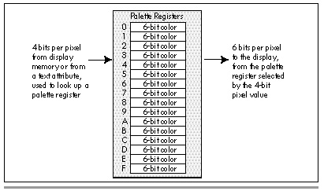

| Previous | Table of Contents | Next |
| While these requirements are no problem if you’re simply calling a subroutine in order to save an image from your program, they pose a considerable problem if you’re designing a hot-key operated TSR that can capture a screen image at any time. With the EGA specifically, there’s never any way to tell what state the registers are currently in, since the registers aren’t readable. (More on this issue later in this chapter.) As a result, any TSR that sets the Bit Mask to 0FFH, the Data Rotate register to 0, and so on runs the risk of interfering with the drawing code of the program that’s already running. |
What’s the solution? Frankly, the solution is to get VGA-specific. A TSR designed for the VGA can simply read out and save the state of the registers of interest, program those registers as needed, save the screen image, and restore the original settings. From a programmer’s perspective, readable registers are certainly near the top of the list of things to like about the VGA! The remaining installed base of EGAs is steadily dwindling, and you may be able to ignore it as a market today, as you couldn’t even a year or two ago.
If you are going to write a hi-res VGA version of the screen capture program, be sure to account for the increased size of the VGA’s mode 12H bit map. The mode 12H (640x480) screen uses 37.5K per plane of display memory, so for mode 12H the displayed screen size equate in Listings 29.1 and 29.2 should be changed to:
DISPLAYED_SCREEN_SIZEequ(640/8)*480
Similarly, if you’re capturing a graphics screen that starts at an offset other than 0 in the segment at A000H, you must change the memory offset used by the disk functions to match. You can, if you so desire, read the start offset of the display memory providing the information shown on the screen from the Start Address registers (CRT Controller registers 0CH and 0DH); these registers are readable even on an EGA.
Finally, be aware that the screen capture and restore programs in Listings 29.1 and 29.2 are only appropriate for EGA/VGA modes 0DH, 0EH, 0FH, 010H, and 012H, since they assume a fourconfiguration of EGA/VGA memory. In all text modes and in CGA graphics modes, and in VGA modes 11H and 13H as well, display memory can simply be written to disk and read back as a linear block of memory, just like a normal array.
While Listings 29.1 and 29.2 are written in assembly, the principles they illustrate apply equally well to high-level languages. In fact, there’s no need for any assembly at all when saving an EGA/VGA screen, as long as the high-level language you’re using can perform direct port I/O to set up the adapter and can read and write display memory directly.
| One tip if you’re saving and restoring the screen from a high-level language on an EGA, though: After you’ve completed the save or restore operation, be sure to put any registers that you’ve changed back to their default settings. Some high-level languages (and the BIOS as well) assume that various registers are left in a certain state, so on the EGA it’s safest to leave the registers in their most likely state. On the VGA, of course, you can just read the registers out before you change them, then put them back the way you found them when you’re done. |
How does one produce the 64 colors from which the 16 colors displayed by the EGA can be chosen? The answer is simple enough: There’s a BIOS function that lets you select the mapping of the 16 possible pixel values to the 64 possible colors. Let’s lay out a bit of background before proceeding, however.
The EGA sends pixel information to the monitor on 6 pins. This means that there are 2 to the 6th, or 64 possible colors that an EGA can generate. However, for compatibility with premonitors, in 200-scan-line modes Enhanced Color Displaymonitors ignore two of the signals. As a result, in CGA-compatible modes (modes 4, 5, 6, and the 200-scan-line versions of modes 0, 1, 2, and 3) you can select from only 16 colors (although the colors can still be remapped, as described below). If you’re not hooked up to a monitor capable of displaying 350 scan lines (such as the old IBM Color Display), you can never select from more than 16 colors, since those monitors only accept four input signals. For now, we’ll assume we’re in one of the 350-scan line color modes, a group which includes mode 10H and the 350-scan-line versions of modes 0, 1, 2, and 3.
Each pixel comes out of memory (or, in text mode, out of the attribute-handling portion of the EGA) as a 4-bit value, denoting 1 of 16 possible colors. In graphics modes, the 4-bit pixel value is made up of one bit from each plane, with 8 pixels’ worth of data stored at any given byte address in display memory. Normally, we think of the 4-bit value of a pixel as being that pixel’s color, so a pixel value of 0 is black, a pixel value of 1 is blue, and so on, as if that’s a built-in feature of the EGA.
Actually, though, the correspondence of pixel values to color is absolutely arbitrary, depending solely on how the colorportion of the EGA containing the palette registers is programmed. If you cared to have color 0 be bright red and color 1 be black, that could easily be arranged, as could a mapping in which all 16 colors were yellow. What’s more, these mappings affect text-mode characters as readily as they do graphics-mode pixels, so you could map text attribute 0 to white and text attribute 15 to black to produce a black on white display, if you wished.
Each of the 16 palette registers stores the mapping of one of the 16 possible 4-bit pixel values from memory to one of 64 possible 6-bit pixel values to be sent to the monitor as video data, as shown in Figure 29.2. A 4-bit pixel value of 0 causes the 6-bit value stored in palette register 0 to be sent to the display as the color of that pixel, a pixel value of 1 causes the contents of palette register 1 to be sent to the display, and so on. Since there are only four input bits, it stands to reason that only 16 colors are available at any one time; since there are six output bits, however, those 16 colors can be mapped to any of 64 colors. The mapping for each of the 16 pixel values is controlled by the lower six bits of the corresponding palette register, as shown in Figure 29.3. Secondary red, green, and blue are less-intense versions of red, green, and blue, although their exact effects vary from monitor to monitor. The best way to figure out what the 64 colors look like on your monitor is to see them, and that’s just what the program in Listing 29.3, which we’ll discuss shortly, lets you do.

Figure 29.2 Color translation via the palette registers.
| Previous | Table of Contents | Next |